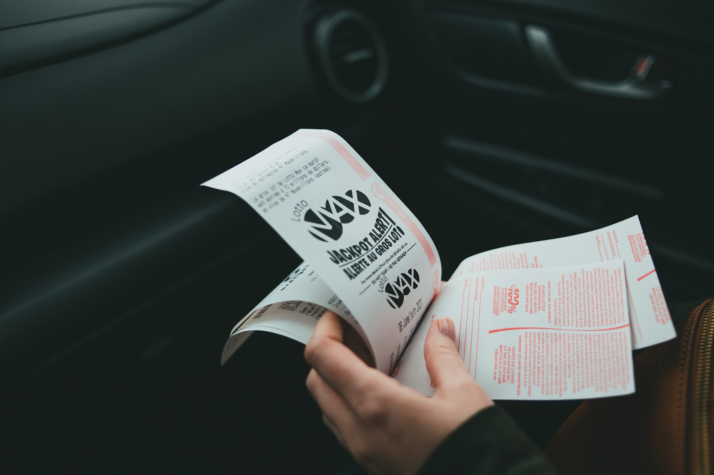

Which would be better: betting on a 6/42 lotto (Php 10.00 per bet; P20,109,076.00 winnings) or betting on a 6/55 lotto (Php 20 per bet; P198,652,121.00 winnings)? But here is the twist: in 6/42 lotto, you have thrice the original chance of winning while on the 6/55 lotto, you have twice the original chance of winning.
What would you choose? Choose one. We'll answer it later.

Betting on the 6/55 lotto, with twice the probability of winning
If you bet on the 6/55 lotto, on the stake that you will be having twice the probability of winning, you may have experienced that yeah! I might really win this thing—Php 198 Million! That certain positive feeling is called the Possibility Effect. This triggers the emotion in us that hopes in the positivity that we might actually win. This is particularly true for lotto games where a big amount of money is given although the stakes are very small—about 0.0000003%!
This effect is the reason why many people go loco over lottos. I bet you know someone living below the poverty line who regularly bets on the lotto. However, when we calculate the Expected Value (EV) of the bet, on the average you will be losing. EV is the amount of money that you will win or lose, on the average, when you bet on a certain result. PWin is the probability of winning and PLose is the probability of losing the bet. We get the PWin in sports betting by getting the inverse of the Euro Odds. The PLose is determined by getting the sum of the probability of all other scenarios. And lastly, the Loss per bet is the stake you will be giving.
I have calculated the Expected Value of the several lotto games offered by the PCSO (Table 1. Expected value of several PCSO games).
Of course, PCSO being a profitable business, the expected values, as expected, are negative. It is only mathematically logical to bet when the EV of a certain bet is positive. This may happen when the jackpot is very large, such that the profit per bet multiplied by the probability of winning is larger than the loss per bet multiplied by the probability of losing. According to a previous article I wrote, on the 6/49 lotto you have to wait until the jackpot is around 260–280 Million in order for the EV to be positive [1]. This never happened in Philippine history! The largest was Php 249 Million back in 2008 [2]. And this does not include the tax which is very big, and the probability that you may share the prize with another person (or worse, other persons)! In general, it is not good to play with these. However, if it gives you the priceless hopes and dreams, then go.
Going back to our premise, so which is better? 6/42 with 3x the winning probability of 20M or the 6/55 with 2x the winning probability of 198M? Let's calculate using the EV (Table 2. Expected Value of Lotto 6/42 and 6/55 with thrice and twice probability of winning, respectively).
Playing the 6/42 produces a positive EV! This means that you can actually earn if you bet on it, given the assumptions!
Betting on the 6/42 lotto, with thrice the probability of winning
If you did not choose the 6/42 lotto, the inverse of the Possibility Effect called the Certainty Effect may have affected you. In these instances, the certainty of a certain event is underweighted. A great example of punters understanding this value are Paul Simmons and John Carter. They studied, statistically, the probability of a hole-in-one happening in a golf tournament. They calculated that this would happen at around 44%. However, the bookmakers in the UK quoted the odds of this event happening higher, with as much as 100-1 [3]. Since these punters saw the value of this bet, they placed maximum bets on different bookmakers in the UK and were reported to win around 1 million pounds (around 75 million pesos).
Important points to consider
A Golden Rule: always calculate the EV. You might fall into these pitfalls:
- Clouding of emotions — Vividness of your favorite team winning may give you bias. Always remember that you should see the value of the bet. For example, your favorite team may be Monarcas and you really think they will win. However, you may want to check the AH odds that may give Tiburones a greater advantage in terms of EV because of the handicap given.
- Unfocused — In markets such as the outright market or those with many possibilities, do not bet in isolation. Check the over-all probability of it happening and not just the certain event. For example, listing the odds of several teams winning the NBA championship, the total percentage is over 100%, by 28.56%. Generally this is okay since bookmakers really do this, but bettors usually aggregate the probabilities. Again, it's about getting the value of the bet.
- Phraseology — Just like the previous point, one may be deceived by the phrasing of the odds.
- Under-weighting — Just like what was previously said about the Certainty effect and vividness, one may underweight an event that is very certain to happen.
One must not fall into these Possibility and Certainty effects. To minimize these effects, one may calculate the EV. Again, it's about finding the value of the bet.
← All Sports Betting articles